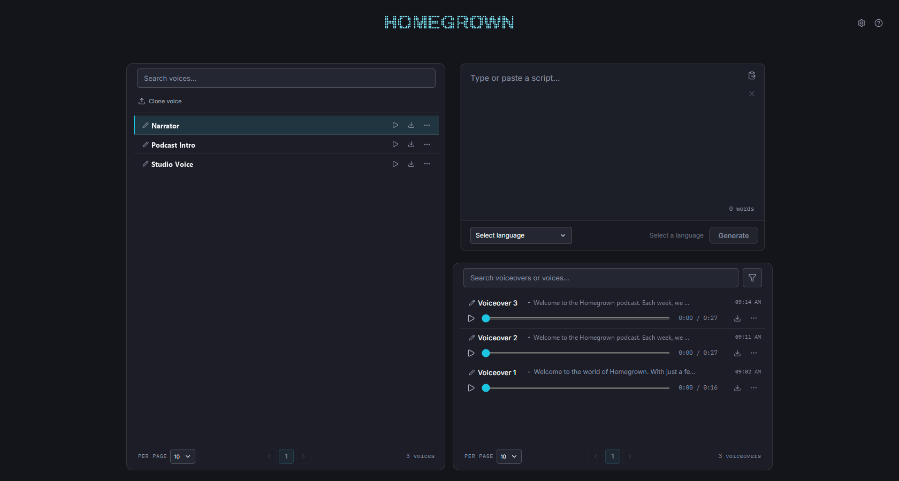
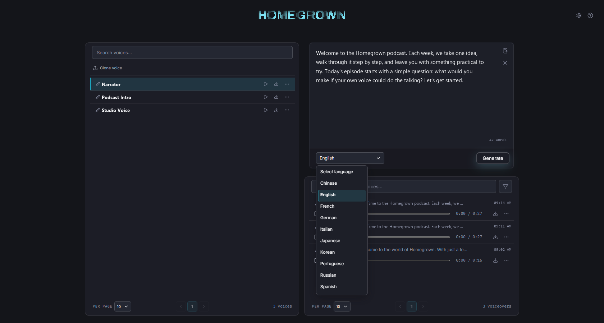
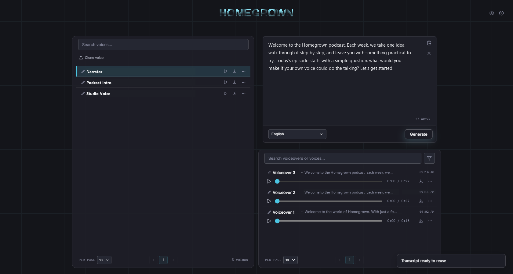
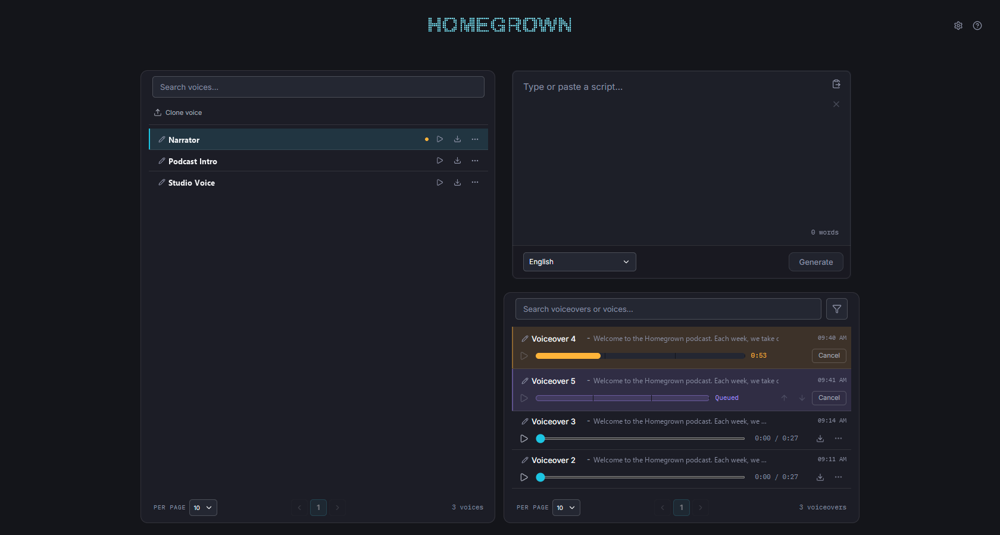
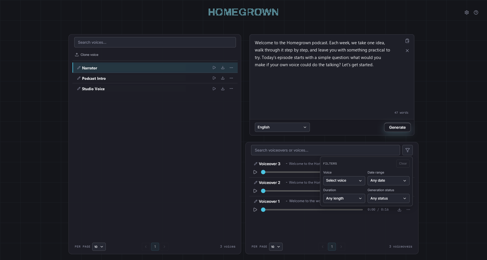

Make recurring voiceovers
with a voice that stays yours.
Choose or add a voice.
Clone voice, or drop audio files here.
Write the script.
Choose its language in the footer.
Generate a voiceover.
Extra requests join the generation queue.
Search and filter.
By voice, date, duration, or status.